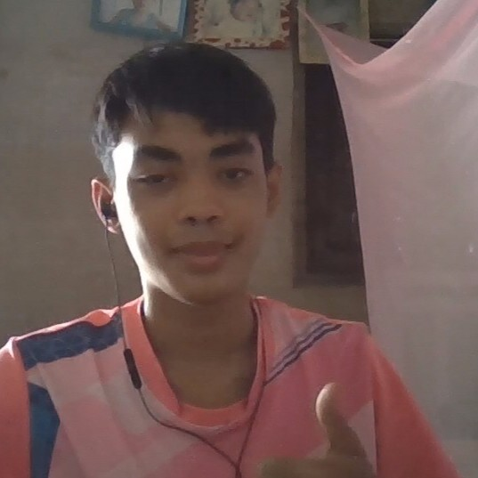
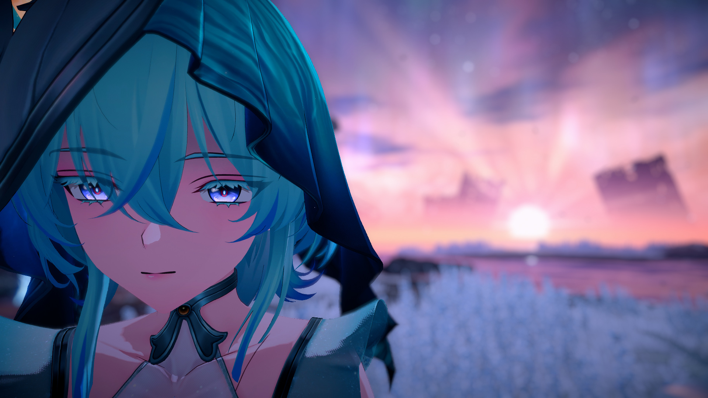

ผมอยากเรียน Full Stack Web Development เพราะอยากสร้างเว็บแอปพลิเคชันได้ครบทั้งส่วนหน้าบ้านและหลังบ้านด้วยตัวเอง ตั้งแต่การออกแบบหน้าจอที่ผู้ใช้เห็น ไปจนถึงการเขียน API และจัดการฐานข้อมูล ผมคิดว่าทักษะนี้เป็นที่ต้องการในตลาดงานมาก และสามารถนำไปต่อยอดทำโปรเจกต์ส่วนตัวหรือเริ่มธุรกิจเล็กๆ ของตัวเองได้ในอนาคต
ผมคาดหวังว่าจะได้เรียนรู้การพัฒนาเว็บอย่างเป็นระบบ ทั้ง HTML, CSS, JavaScript, Node.js และฐานข้อมูล รวมถึงได้ลงมือทำโปรเจกต์จริงเป็นทีม เพื่อให้เข้าใจกระบวนการทำงานจริงของนักพัฒนา และอยากให้จบวิชานี้พร้อมผลงานที่สามารถนำไปใส่ใน Portfolio ได้
ตัวผมเป็นคนที่ลืมอะไรง่ายๆและเหม่อง่ายจนโฟกัสอะไรได้ยาก ส่วนแนวทางพยายามจะทำให้มันชินและพยายามให้ลืมน้อยลง
